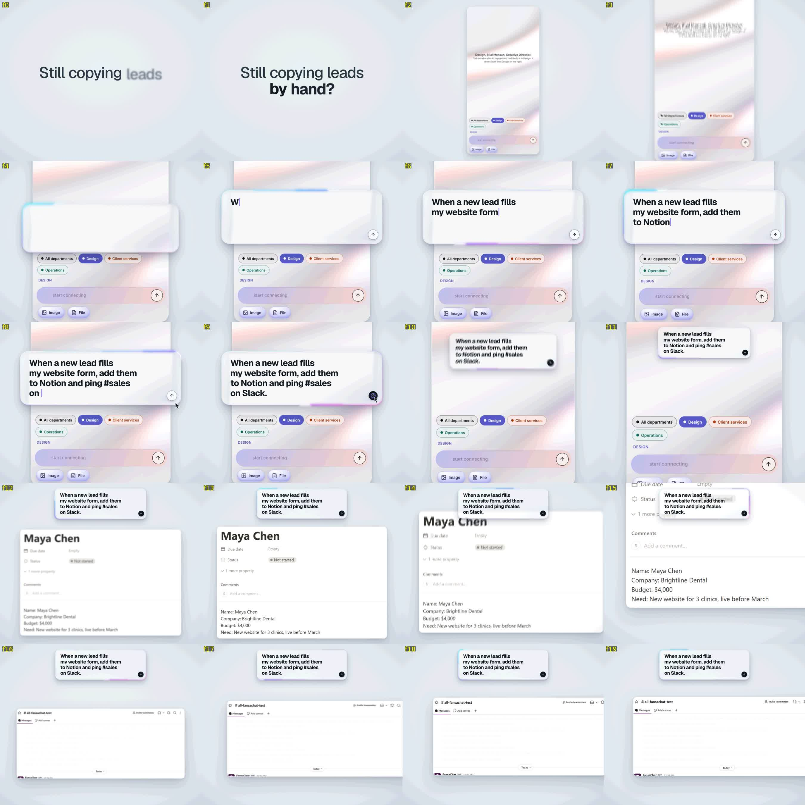
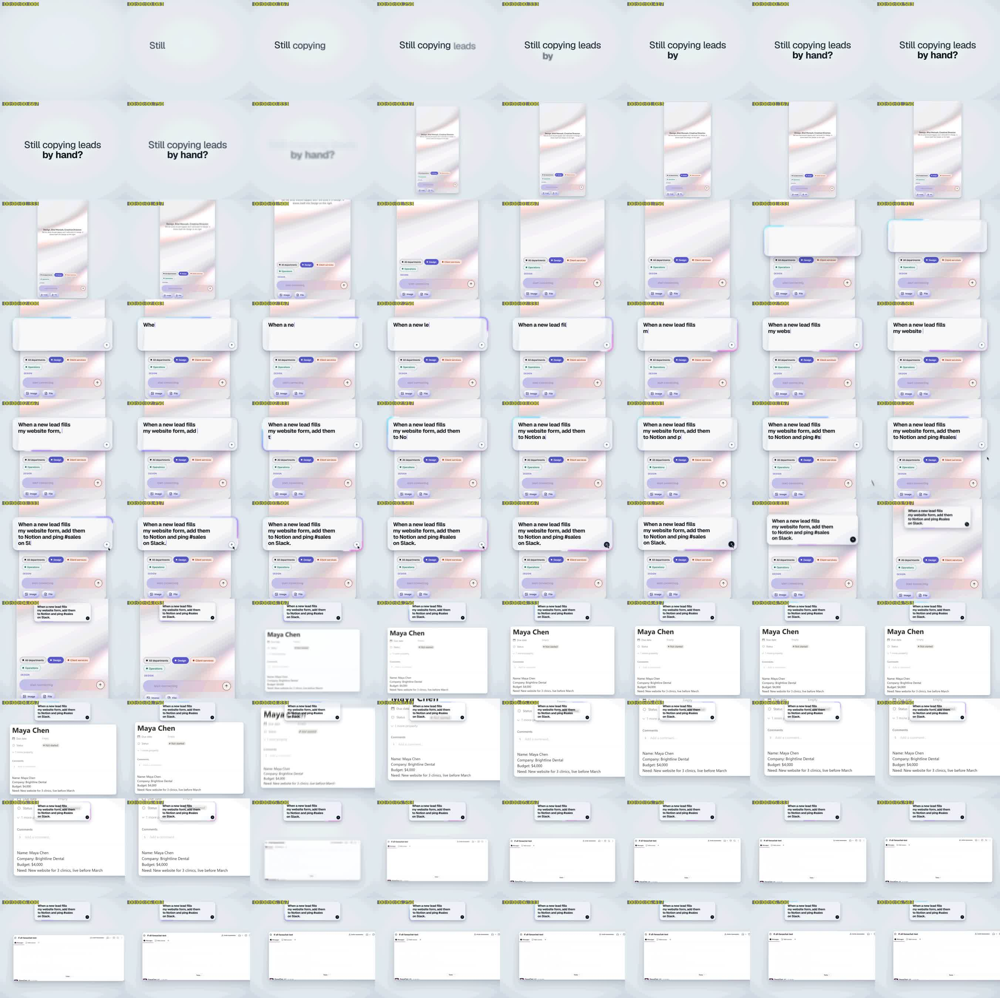

Threshold: -24.1 LUFS
Loudness range:
LRA: 5.2 LU
Threshold: -35.2 LUFS
LRA low: -17.7 LUFS
LRA high: -12.4 LUFS
True peak:
Peak: -1.4 dBFS
[out#0/null @ 0x5d3957d8d0c0] video:81KiB audio:1252KiB subtitle:0KiB other streams:0KiB global headers:0KiB muxing overhead: unknown
frame= 200 fps=0.0 q=-0.0 Lsize=N/A time=00:00:06.66 bitrate=N/A speed=20.2x elapsed=0:00:00.33